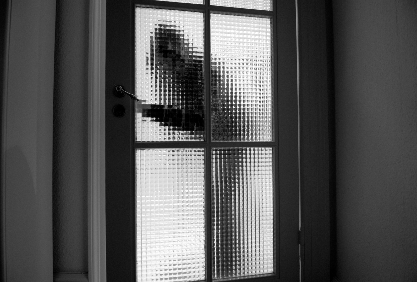

Home | About | Stories | Monsters | Legends| More Links
Intruder Alert
Intruder Alert is a creepy story about a man who sees a news report one night about a killer on the loose in the area and hears a noise downstairs.
It was the middle of the night and I was in the bedroom, trying to relax. I changed the channel on the TV and saw that the local news was on. At the bottom of the screen, there was a breaking news alert.
”Murderer on the loose... Hiding in the vicinity... Police warning everyone to be on the alert... Suspect is armed and dangerous..”.
I was just drifting off to sleep when I was awakened by a strange noise downstairs. It sounded like there was someone in the house.
At that moment, my heart began beating fast and I broke into a cold sweat. Straining my ears to listen, I thought I heard another noise. It was the sound of a door creaking.
It wasn’t my imagination. There was an intruder in the house.
”I have to get out of here, fast!” I thought.
I slipped off the bed as quietly as possible and crept towards the window. My body was shaking with fear and I was hoping I didn’t make any noise.
Just then, I heard faint footsteps making their way up the stairs. It sounded like more than one person. At any second, they would burst through the door. I had to get away.
I climbed out the window and onto the garage roof, moving as fast as I could without making too much noise. At the edge of the roof, I grabbed the drainpipe and lowered myself down until I dropped into the garden.
As I paused, I looked up at the window I had just escaped from and saw the lights
”That was close!” I thought.
A chill ran down my spine as I thought about what would have happened if they caught me.
I made my way to the bottom of the garden and into the woods. Once I was safely hidden by the trees, I broke into a run. I pushed onwards, stumbling through the darkness, moving through the undergrowth, until I came to another housing estate.
Clutching my knife, I headed towards another house.
Source